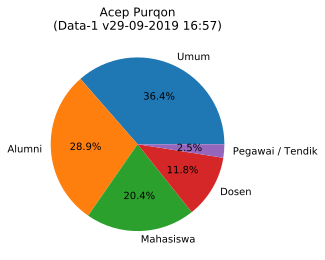
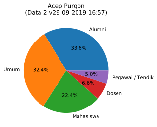
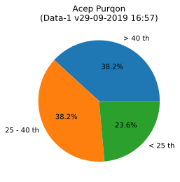
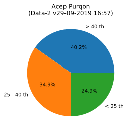

Last updated: 29-09-2019 16:57
Calon Rektor

Acep Purqon
280 Data-1 | 241 Data-2
Unofficial Survey pemilihan rektor ITB periode 2020-2025. Ingin berpartisipasi? Silahkan kunjungi survey [Anonim] atau dengan [Identitas (Email)]
Data-1 (Email)
| Ctgr | #Votes | %Votes | Rank |
|---|---|---|---|
| All | 280 | 29.1 | 1 |
| Dosen | 33 | 24.3 | 2 |
| Mhsw | 57 | 34.5 | 1 |
| Pegawai | 7 | 11.7 | 3 |
| Alumni | 81 | 24.3 | 1 |
| Umum | 102 | 38.2 | 1 |
| > 40th | 107 | 23.3 | 2 |
| 25-40th | 107 | 33.3 | 1 |
| < 25th | 66 | 36.5 | 1 |
Data-2 (Anonim)
| Ctgr | #Votes | %Votes | Rank |
|---|---|---|---|
| All | 241 | 12.1 | 3 |
| Dosen | 16 | 5.9 | 6 |
| Mhsw | 54 | 18.5 | 2 |
| Pegawai | 12 | 5.8 | 6 |
| Alumni | 81 | 10.8 | 3 |
| Umum | 78 | 16.5 | 1 |
| > 40th | 97 | 9.6 | 4 |
| 25-40th | 84 | 12.6 | 3 |
| < 25th | 60 | 19.0 | 1 |
Data-1 (Email)
| # | Alasan Memilih | Count |
|---|---|---|
| 1 | Sesuai dengan kriteria kekinian (Rektor 4.0) | 75 |
| 2 | Muda dan berenergi | 53 |
| 3 | Keberhasilan dan prestasi | 29 |
| 4 | Tipe yg futuristik dan outside-the-box yg bisa menangkap peluang masa depan | 25 |
| 5 | Mendatangkan dana riset dan kerjasama eksternal, dalam dan luar negeri | 25 |
| 6 | Akhlak dan budi pekerti | 23 |
| 7 | Kecerdasan dan keberanian utk kemajuan ITB | 17 |
| 8 | Kapabilitas ybs utk memajukan riset dan industri RI | 16 |
| 9 | Karakter kepemimpinan dan leadership | 7 |
| 10 | Kapabilitas ybs utk meningkatkan ranking ITB | 5 |
| 11 | Berakhlak mulia, pretasi n semangat tinggi | 1 |
| 12 | Karena tidak bisa multiple, saya pilih other.. dengan alasan semua pilihan diatas...Terima kasih | 1 |
| 13 | Emansipasi, kesetaraan dan kebhinekaan | 1 |
| 14 | Keberhasilan dan prestasi Muda dan berenergi Program ybs utk peningkatan income dan kesejahteraan dosen / pegawai Emansipasi, kesetaraan dan kebhinekaan Akhlak dan budi pekerti Sesuai dengan kriteria kekinian (Rektor 4.0) Kapabilitas ybs utk meningkatkan ranking ITB Kapabilitas ybs utk memajukan riset dan industri RI Kecerdasan dan keberanian utk kemajuan ITB Karakter kepemimpinan dan leadership Tipe yg futuristik dan outside-the-box yg bisa menangkap peluang masa depan Mendatangkan dana riset dan kerjasama eksternal, dalam dan luar negeri | 1 |
| 15 | memiliki jaringan/ koneksi internasional yang kuat yang bisa dimanfaatkan untuk pengembangan ITB kedepan | 1 |
Data-2 (Anonim)
| # | Alasan Memilih | Count |
|---|---|---|
| 1 | Sesuai dengan kriteria kekinian (Rektor 4.0) | 59 |
| 2 | Muda dan berenergi | 56 |
| 3 | Keberhasilan dan prestasi | 23 |
| 4 | Mendatangkan dana riset dan kerjasama eksternal, dalam dan luar negeri | 21 |
| 5 | Tipe yg futuristik dan outside-the-box yg bisa menangkap peluang masa depan | 20 |
| 6 | Akhlak dan budi pekerti | 16 |
| 7 | Kapabilitas ybs utk memajukan riset dan industri RI | 13 |
| 8 | Kecerdasan dan keberanian utk kemajuan ITB | 12 |
| 9 | Karakter kepemimpinan dan leadership | 7 |
| 10 | Kapabilitas ybs utk meningkatkan ranking ITB | 7 |
| 11 | Emansipasi, kesetaraan dan kebhinekaan | 3 |
| 12 | Keluarga | 1 |
| 13 | Program ybs utk peningkatan income dan kesejahteraan dosen / pegawai | 1 |
| 14 | Teman | 1 |
| 15 | Cuma kenal itu aja | 1 |
Data-1 (Email)

Data-2 (Anonim)

Data-1 (Email)

Data-2 (Anonim)
